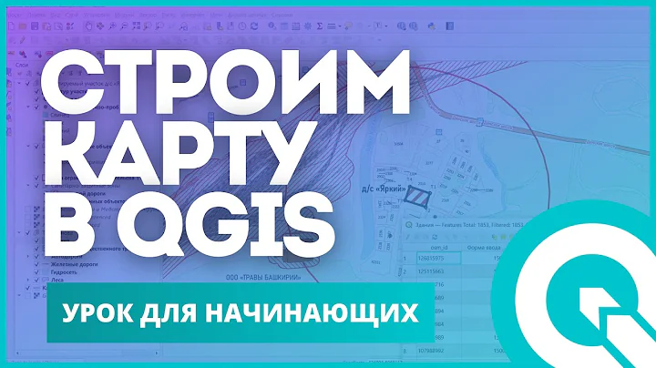
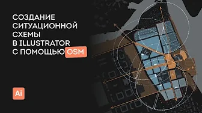
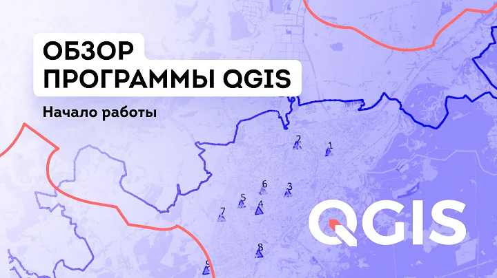

Система позволяет оператору вести контроль собранного урожая и оценивать его степень влажности
Мониторинг урожайности сельскохозяйственных растений
Это решение для точного земледелия помогает принимать обоснованные решения о внесении удобрений, орошении и защите растений, способствуя устойчивому развитию сельского хозяйства, сокращая использование ресурсов и повышая рентабельность.
База знаний
Применение ГИС для обеспечения технологии «точного земледелия»
Один из этапов технологии земледелия, позволяющий определить результат работы от внедрения всех этапов.
Как это работает?
Python and Google Earth Engine in QGIS - QGIS GEE 02 | burdGIS



